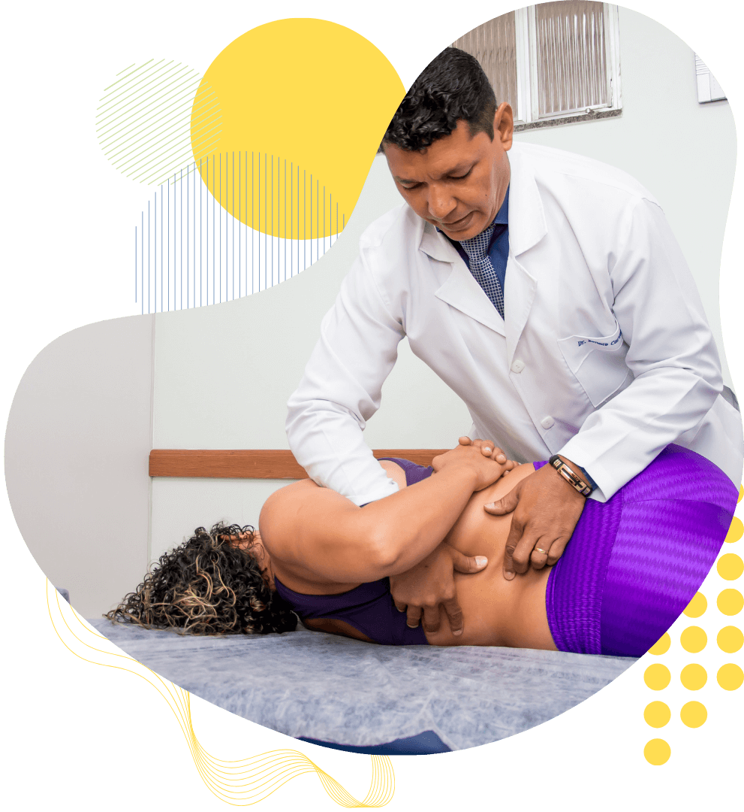

A Solução Natural para Transformar sua Qualidade de Vida!
Transforme sua qualidade de vida com a Quiropraxia e Fisioterapia para aliviar dores e promover uma saúde integral.

Transforme sua qualidade de vida com a Quiropraxia e Fisioterapia para aliviar dores e promover uma saúde integral.

O Instituto Renato Carvalho é uma clínica de referência em quiropraxia, fundada pelo Dr. Renato Carvalho, um renomado professor e fisioterapeuta.
O IRC é especializado em tratar problemas de coluna e dores no corpo, usando técnicas seguras e eficazes para melhorar a saúde e o bem-estar dos pacientes.
Eleita a melhor clínica de fisioterapia de Nilópolis em 2022 e 2023.

Clientes Atendidos
Clientes Atendidos
Clientes Atendidos